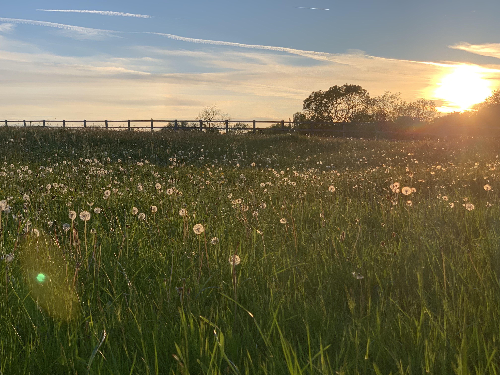

Lead Data Scientist · Nottingham, UK
PhD scientist turned data scientist — building real-time AI systems monitoring animal health. I work at the intersection of computer vision, machine learning, and veterinary science.

About
I started as a research scientist — PhD in biosciences, years spent running clinical trials and microbiome studies at Mars Petcare's WALTHAM Institute, publishing peer-reviewed papers, and lecturing at Nottingham Trent University.
But I kept being drawn to what happens when you actually do something with the science — when the insight has to leave the lab and work in the real world.
That pull took me into data science and AI. I spent time at Multiverse training data scientists inside some of the UK's largest organisations. Now I'm Lead Data Scientist at Vet Vision AI, a University of Nottingham spinout, where I joined as the first and only data scientist and have built the function entirely from scratch.
The models I build don't live in notebooks — they run in real stables, in real time, watching over horses 24/7. I also own a horse, which gives me a very personal reason to get this right.
Core values I stand by
Integrity · Trust · Harmony · Joy · Resilience
Experience
Technical Skills
Beyond Work
The best thinking happens when you're not at a desk. These are the pursuits I've kept up for years — each one teaches me something the work doesn't.
Get in Touch
Whether you're building something at the frontier of AI and life sciences, or just want to connect — I'd love to hear from you.